DS_0 = 'look_i16.npz'
DS_1 = 'look_i16__minn10_epsilon1.npz'
DS_2 = 'v2-splice-maxstrokes6.npz'
DS_3 = 'epoch-20231214-trainval.npz'
DS_4 = 'epoch-20231214-filtered-trainval.npz'
DS_5 = 'epoch20240104_trainval09.npz'
DS_6 = 'epoch20240104_furtherfiltered_trainval09.npz'
DS_7 = 'epoch20240221_expanded10x_trainval.npz'SLML Datasets Overview
The Datasets
https://storage.googleapis.com/singleline-datasets/v1/look_f16.npz
https://storage.googleapis.com/singleline-datasets/v1/look_f16__minn10_epsilon1.npz
https://storage.googleapis.com/singleline-datasets/v1/look_i16.npz
https://storage.googleapis.com/singleline-datasets/v1/look_i16__minn10_epsilon1.npz
https://storage.googleapis.com/singleline-datasets/v1/v2-splice-maxstrokes5.npz
https://storage.googleapis.com/singleline-datasets/v1/v2-splice-maxstrokes6.npz
https://storage.googleapis.com/singleline-datasets/v1/epoch-20231214-trainval.npz
https://storage.googleapis.com/singleline-datasets/v1/epoch-20231214-filtered-trainval.npz
https://storage.googleapis.com/singleline-datasets/v1/epoch20240104_trainval08.npz
https://storage.googleapis.com/singleline-datasets/v1/epoch20240104_trainval09.npz
https://storage.googleapis.com/singleline-datasets/v1/epoch20240104_furtherfiltered_trainval08.npz
https://storage.googleapis.com/singleline-datasets/v1/epoch20240104_furtherfiltered_trainval09.npz
https://storage.googleapis.com/singleline-datasets/v1/epoch20240221_expanded10x_trainval.npzBASE_PATH = '/Users/al/code/_svg/singleline_models/data/look'
def load_ds(fname, base_path=BASE_PATH):
payload = np.load(Path(base_path) / fname, encoding='latin1', allow_pickle=True)
return payload['train'], payload['valid']train0, valid0 = load_ds(DS_0)
train1, valid1 = load_ds(DS_1)
train2, valid2 = load_ds(DS_2)
train3, valid3 = load_ds(DS_3)
train4, valid4 = load_ds(DS_4)
train5, valid5 = load_ds(DS_5)
train6, valid6 = load_ds(DS_6)len(train5), len(train6)(2100, 1300)len(train3), len(train4)(2400, 1800)len(train1), len(train2)(1300, 1200)from singleline_dataset.transforms import *
def stroke_summary_df(dataset):
summary = [
{
"idx": i,
"num_points": len(deltas),
"num_strokes": len(deltas_to_strokes(deltas)),
}
for i, deltas in enumerate(dataset)
]
# by_num_strokes = sorted(summary, key=lambda k: k["num_strokes"], reverse=True)
df = pd.DataFrame(summary)
return dfdf0 = stroke_summary_df(train0)
df1 = stroke_summary_df(train1)
df2 = stroke_summary_df(train2)
df3 = stroke_summary_df(train3)
df4 = stroke_summary_df(train4)
df5 = stroke_summary_df(train5)
df6 = stroke_summary_df(train6)df0.num_points.hist()
# df0.num_strokes.hist()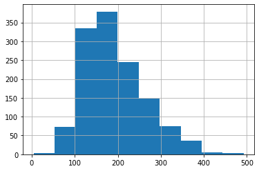
df1.num_points.hist()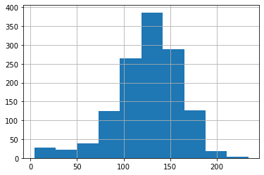
df2.num_points.hist()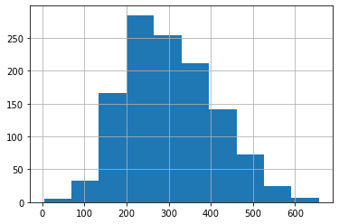
df3.num_points.hist()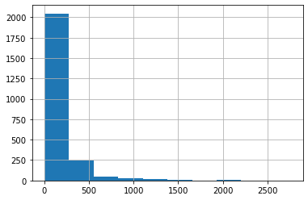
df4.num_points.hist()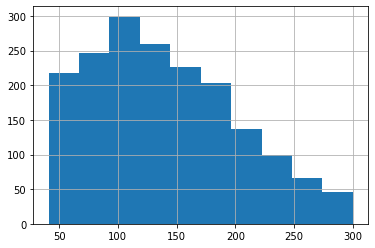
df5.num_points.hist()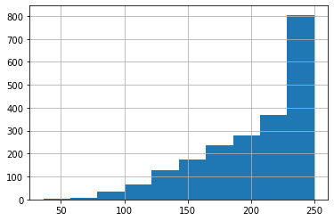
df6.num_points.hist()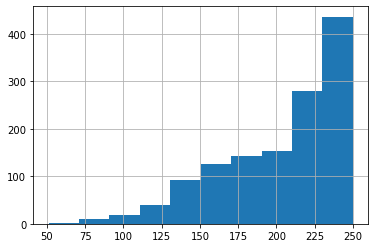
import matplotlib.pyplot as plt
fig, ((ax1, ax2), (ax3, ax4)) = plt.subplots(2, 2, figsize=(10,10))
ax1.set_title('num_strokes\n(look_i16)')
df0.num_strokes.hist(ax=ax1)
ax2.set_title('num_strokes\n(look_i16__minn10)')
df1.num_strokes.hist(ax=ax2)
ax3.set_title('num_points\n(look_i16)')
df0.num_points.hist(ax=ax3)
ax4.set_title('num_points\n(look_i16__minn10)')
df1.num_points.hist(ax=ax4)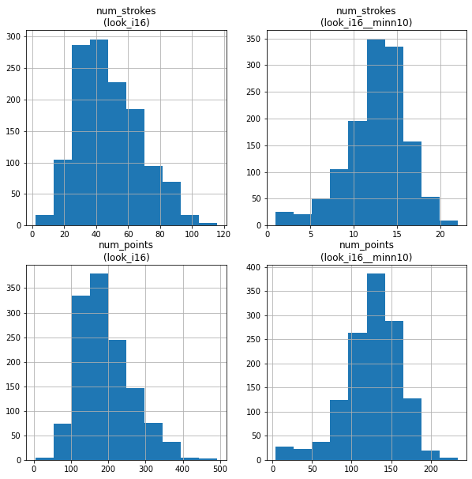
len(df0), len(df1)(1300, 1300)import matplotlib.pyplot as plt
fig, ((ax1, ax2), (ax3, ax4)) = plt.subplots(2, 2, figsize=(10,10))
ax1.set_title('num_strokes\n(look_i16__minn10)')
df1.num_strokes.hist(ax=ax1)
ax2.set_title('num_strokes\n(v2-splicedata)')
df2.num_strokes.hist(ax=ax2)
ax3.set_title('num_points\n(look_i16__minn10)')
df1.num_points.hist(ax=ax3)
ax4.set_title('num_points\n(epoch=v2-splicedata)')
df2.num_points.hist(ax=ax4)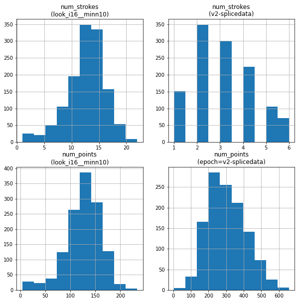
len(df1), len(df2)(1300, 1200)import matplotlib.pyplot as plt
fig, ((ax1, ax2, ax3), (ax4, ax5, ax6)) = plt.subplots(2, 3, figsize=(16,10))
ax1.set_title('num_strokes\n(epoch=v2-splicedata)')
df2.num_strokes.hist(ax=ax1)
ax2.set_title('num_strokes\n(epoch=20231214)')
df3.num_strokes.hist(ax=ax2)
ax3.set_title('num_strokes\n(epoch=20231214-filtered)')
df4.num_strokes.hist(ax=ax3)
ax4.set_title('num_points\n(epoch=v2-splicedata)')
df2.num_points.hist(ax=ax4)
ax5.set_title('num_points\n(epoch=20231214)')
df3.num_points.hist(ax=ax5)
ax6.set_title('num_points\n(epoch=20231214-filtered)')
df4.num_points.hist(ax=ax6)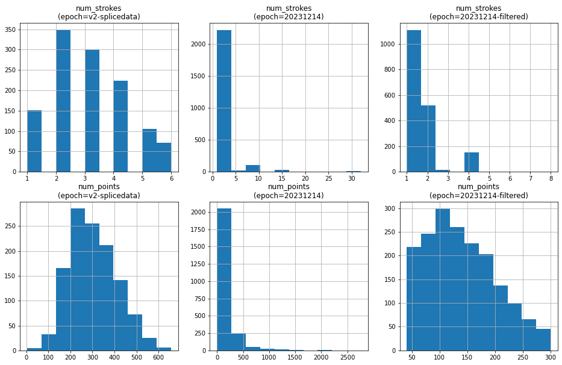
len(df2), len(df3), len(df4)(1200, 2400, 1800)df3[df3.num_points > 300]| idx | num_points | num_strokes | |
|---|---|---|---|
| 8 | 8 | 1034 | 8 |
| 9 | 9 | 1127 | 16 |
| 16 | 16 | 329 | 4 |
| 26 | 26 | 320 | 4 |
| 33 | 33 | 331 | 4 |
| ... | ... | ... | ... |
| 2372 | 2372 | 315 | 2 |
| 2376 | 2376 | 1093 | 16 |
| 2389 | 2389 | 323 | 4 |
| 2395 | 2395 | 1389 | 16 |
| 2396 | 2396 | 1234 | 16 |
313 rows × 3 columns
plot_strokes(deltas_to_strokes(train3[9]))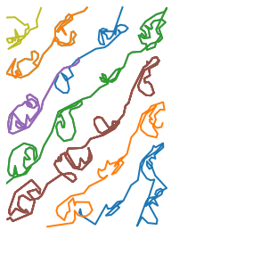
plot_strokes(deltas_to_strokes(train3[16]))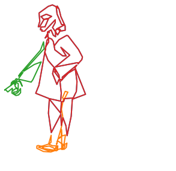
plot_strokes(deltas_to_strokes(train3[2376]))df3[df3.num_points < 50]| idx | num_points | num_strokes | |
|---|---|---|---|
| 21 | 21 | 23 | 1 |
| 24 | 24 | 28 | 1 |
| 32 | 32 | 20 | 1 |
| 52 | 52 | 49 | 1 |
| 60 | 60 | 35 | 1 |
| ... | ... | ... | ... |
| 2370 | 2370 | 41 | 1 |
| 2382 | 2382 | 20 | 1 |
| 2383 | 2383 | 32 | 1 |
| 2392 | 2392 | 38 | 1 |
| 2394 | 2394 | 30 | 1 |
379 rows × 3 columns
plot_strokes(deltas_to_strokes(train3[21]))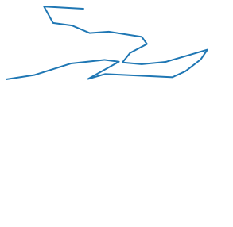
plot_strokes(deltas_to_strokes(train3[2394]))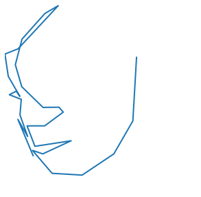
plot_strokes(deltas_to_strokes(train3[2370]))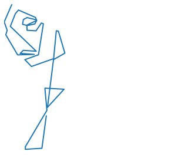
fig, ((ax1, ax2), (ax3, ax4)) = plt.subplots(2, 2, figsize=(10,10))
ax1.set_title('num_strokes\n(20240104)')
df5.num_strokes.hist(ax=ax1)
ax2.set_title('num_strokes\n(20240104-furtherfiltered)')
df6.num_strokes.hist(ax=ax2)
ax3.set_title('num_points\n(20240104)')
df5.num_points.hist(ax=ax3)
ax4.set_title('num_points\n(20240104-furtherfiltered)')
df6.num_points.hist(ax=ax4)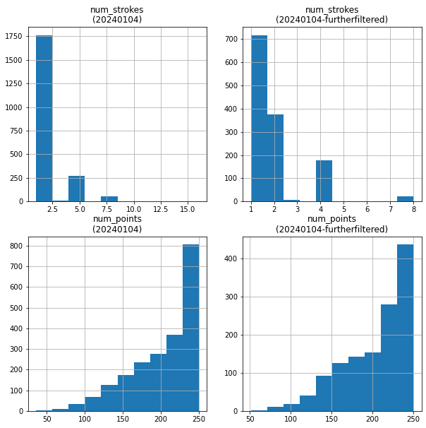
len(df5), len(df6)(2100, 1300)